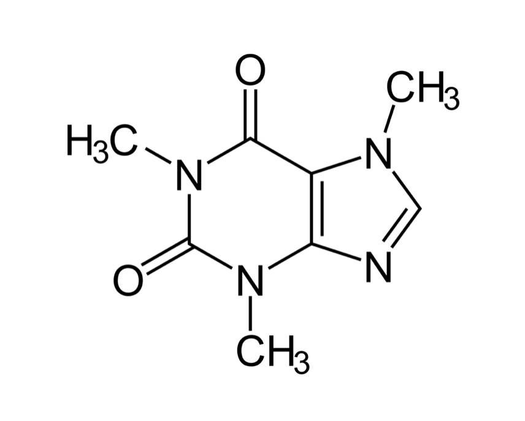

 College students consume surprising quantities of caffeine on average. This study seeks to determine if a correlation exists between the amount of caffeine an individual consumes daily and that individual's grade point average in school. The initial experiment included a group, which received daily caffeine equal to the national average (Group A), a group which received twice the national daily average (Group B), and a control group which received a placebo (Group C). Preliminary results indicate that average consumption of daily caffeine led to a slight and steady increase in GPA throughout the term. A higher than average consumption of caffeine led to higher GPA initially, but then grades fell off towards the end of the semester. Finally, no consumption of caffeine led to neither a significant increase or decrease in overall GPA performance.
| Group: | Starting Average: | Midterm Average: | Final Average: |
|---|---|---|---|
| A | 3.25 | 3.30 | 3.31 |
| B | 3.30 | 3.62 | 3.14 |
| C | 3.28 | 3.27 | 3.30 |